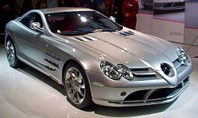

| Mclaren F1 Был быстрейшим серийным автомобилем в мире (удерживал этот статус с 1994 по 2005 года), разрешённым к использованию на дорогах общего пользования[источник не указан 282 дня]. Был спроектирован и произведён компанией McLaren Automotive, являющейся дочерним предприятием британской McLaren Group, которая также владеет командой Формулы 1 Vodafone McLaren Mercedes. На сегодняшний день это самый быстрый автомобиль с атмосферным двигателем для передвижения по дорогам общего пользования. На автомобиль устанавливается 6.1 л 60° BMW S70 V12 двигатель. Всего было выпущено 107 машин, 65 из которых были уличными вариантами (F1), 5 — LM (ограниченная версия машин, посвященных основателю компании Брюсу Макларену), 3 — эксклюзивными (GT), 5 прототипов (XP), 28 гоночных версий (GTR) и 1 прототип LM (XP LM). Производство было начато в 1992 и завершено в 1998 году. |
|||||
| Mercedes-Benz SLR McLaren (McLaren P7) Автомобиль навеян Mercedes-Benz 300SLR 1955 года, который был создан на основе Mercedes-Benz W196, позднее названный дорожной версией 300SL Gullwing.Хотя часто автомобиль классифицируетсся как суперкар, по сравнению с такими признаными представителями класса как: Porsche 980 Carrera GT, Lamborghini Murciélago и Ferrari Enzo присутствие автоматической коробки передач и некоторые её особенности, делают автомобиль скорее представителем Супер GT чьи более близкие конкуренты Aston Martin Vanquish и Ferrari 599 GTB. Одной из целей разработчиков являлось соединить в SLR суперкар и GT класс. На момент выпуска это был самый скоростной автомобиль с автоматической коробкой передач в мире. Mercedes-Benz заявил, что в течение 7 лет запустит в производство 3500 SLR (по 500 в год). Цена автомобиля: 300 000 фунтов стерлингов или 430 291 долларов. Летом 2007 года руководство Mercedes-Benz решило отказаться от сотрудничества с McLaren в деле производства суперкаров SLR McLaren. Однако сборка мелкосерийных, эксклюзивных и очень дорогих моделей SLR McLaren продолжилась, а список модификаций даже расширился. Так, в начале 2006 года была показана еще более скоростная машина SLR MсLaren 722 Edition с 650-сильным мотором. Летом появился еще один SLR McLaren Roadster с открытым кузовом и складным мягким верхом, оснащенный 626-сильным мотором. В январе 2009 компания представила мелкосерийный спидстер SLR Mclaren Stirling Moss по цене € 1 200 000, ограниченный тиражом в 75 экземпляров. В качестве замены, Mercedes-Benz представил Mercedes-Benz SLS AMG разработанный полностью силами подразделения AMG. |
|||||
| McLaren MP4-12C Мировая премьера состоялась в 2010 году на Франкфуртском автосалоне. Автомобиль появился в продаже в 2011 году по цене 168 500 фунтов стерлингов (199 700 евро) в Великобритании. В основе конструкции автомобиля McLaren MP4-12C лежит монокок, изготовленный из композитного материала на основе углеродного волокна. Узел из карбона представляет собою промышленную версию разработки, которую фирма McLaren использует на своих болидах для участия в Формуле 1 уже с 1981 года. Однако, несмотря на столь давний срок, конструкцию, созданную для модели 12C и получившую названию MonoCell, инженеры McLaren по праву называют революционной. Причина кроется в абсолютно новой технологии производства, при которой узел формуется (отливается) единым куском, а не выклеивается из лоскутов. Если прежде для изготовления подобного шасси требовались десятки часов, то теперь достаточно всего четырёх часов. Столь же совершенен и новый двигатель M838T, которым комплектуется McLaren MP4-12C. Восьмицилиндровый бензиновый мотор с углом развала блока цилиндров 90 градусов оснащается двойным турбонаддувом, развивает максимальную мощность около 600 л.с. и максимальный крутящий момент 600 Нм. |